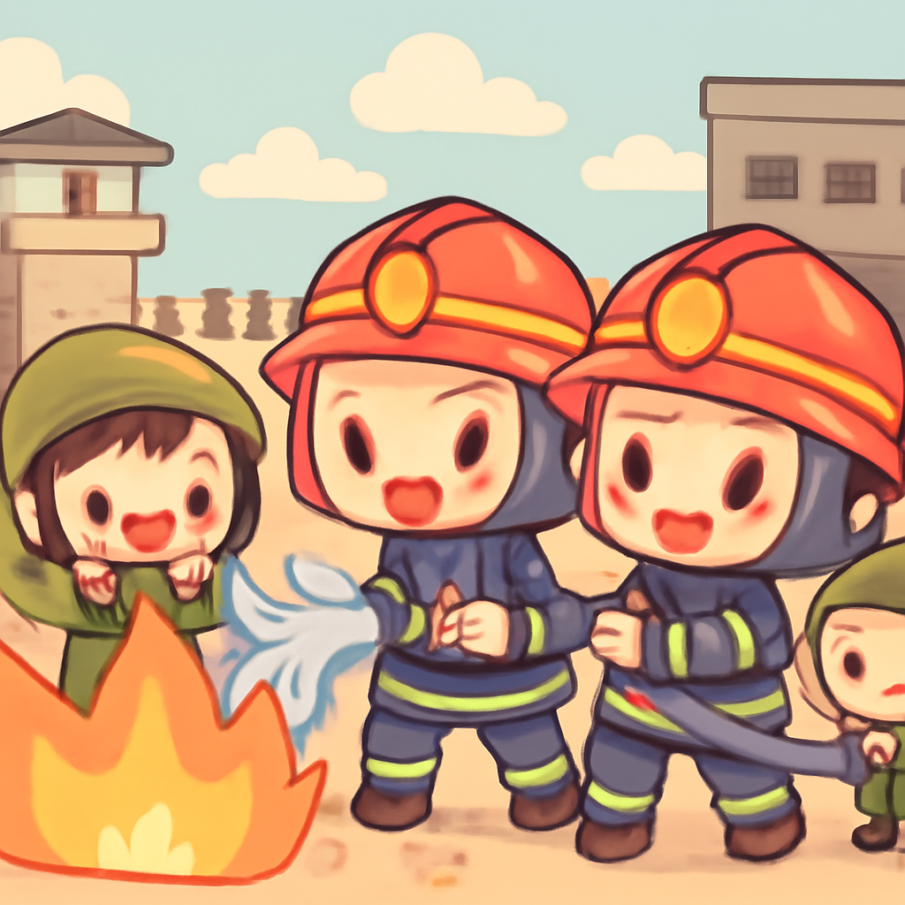
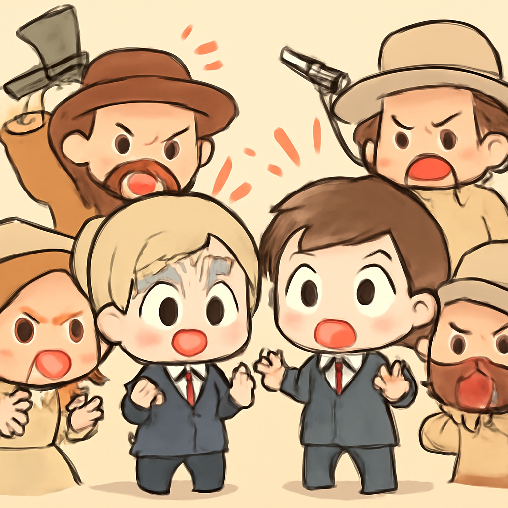
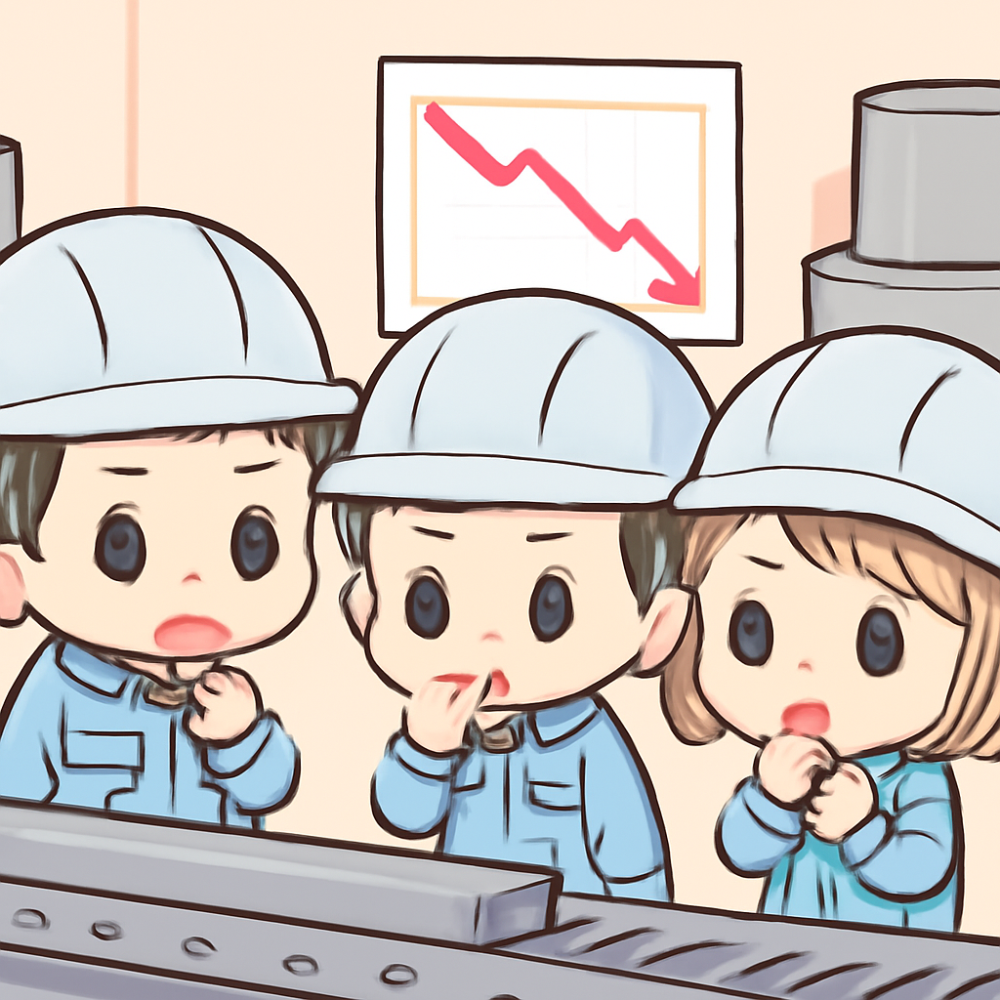
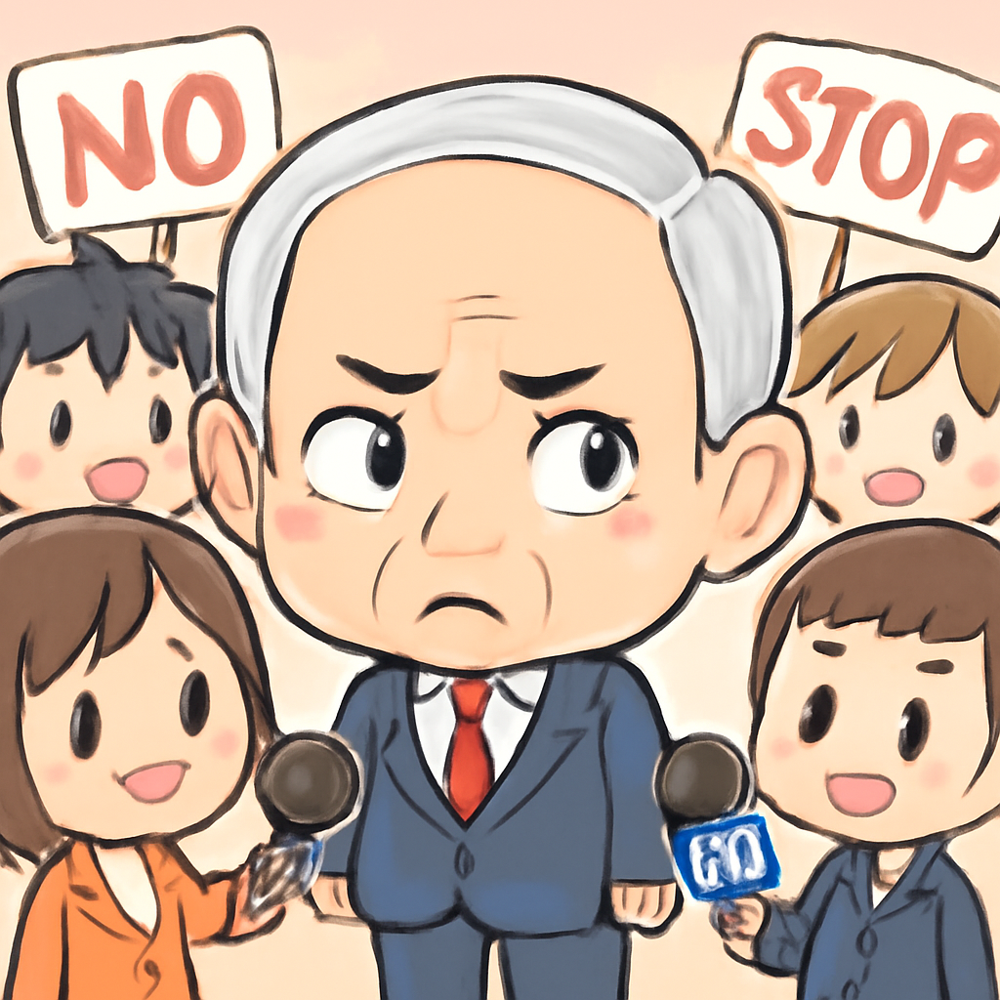

其一 · 法國巴黎 · 馬克宏呼籲恢復秩序
法國總統馬克宏在全國騷亂後呼籲冷靜。
法國巴黎，總統馬克宏在全國多地爆發騷亂後發表演講，強調需要恢復秩序。這些騷亂引發了不少搶劫事件，讓人想起電影裡的打鬥場面，卻不太好笑。這場動盪的背景是民眾對政府政策的不滿，未來的局勢走向值得關注。
🔗 原始新聞 ↗
2026-10-19 · 以古觀今，以笑抗愁
法國總統馬克宏在全國騷亂後呼籲冷靜。
法國巴黎，總統馬克宏在全國多地爆發騷亂後發表演講，強調需要恢復秩序。這些騷亂引發了不少搶劫事件，讓人想起電影裡的打鬥場面，卻不太好笑。這場動盪的背景是民眾對政府政策的不滿，未來的局勢走向值得關注。
🔗 原始新聞 ↗
加拿大軍事基地發生火災，造成四人死亡，數十人受傷。

阿爾伯塔省的加拿大軍事基地發生了一場嚴重火災，造成四人死亡，數十人受傷。總理卡尼形容這場火災是「最惡劣的條件下的災難」。這不僅是軍隊的悲劇，也凸顯了安全管理的重要性，讓人不禁想問：防火措施是不是要升級了？
🔗 原始新聞 ↗
以色列定居者對外國外交官發動襲擊，國際社會譴責。

在以色列西岸，外國外交官遭到以色列定居者襲擊，引發了國際社會的譴責。以色列軍方對此表示關切，但仍有聲音質疑是否存在更深層的問題。這件事不僅影響外交關係，也讓人思考和平進程的脆弱性，真是讓人心情複雜。
🔗 原始新聞 ↗
歐盟對中國的關稅政策波及烏克蘭鋼鐵市場。

烏克蘭的鋼鐵業主表示，歐盟針對中國的關稅措施意外影響了他們的市場，讓他們感到被「捆綁」了。這不僅是經濟問題，還關乎全球貿易的格局。看來，鋼鐵市場的競爭不只是打價格戰，還要打政策戰，真是讓人感到無奈。
🔗 原始新聞 ↗
以色列總理內塔尼亞胡對西岸襲擊事件表示懷疑。

以色列總理內塔尼亞胡在面對西岸針對巴勒斯坦人的襲擊事件後，對這些事件的報導表示懷疑，稱其為「抹黑」運動。這場爭議不僅影響了國內外的輿論，也引發了對以色列政府立場的質疑。看來，政治上的猜疑和謀略可真是無止盡。
🔗 原始新聞 ↗